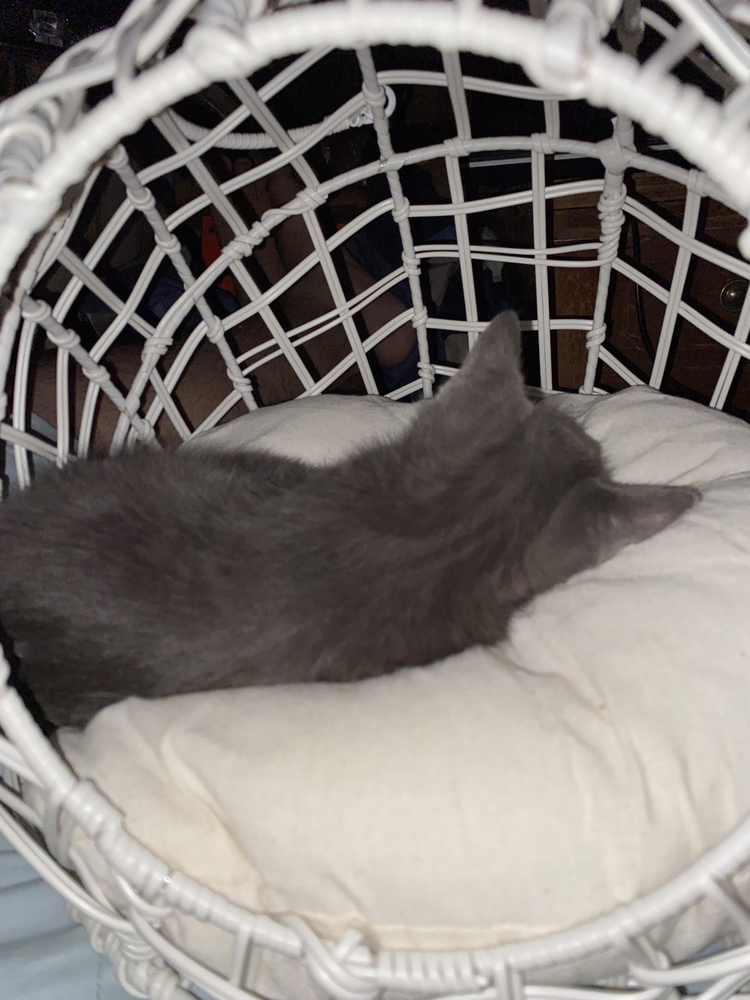

My name is Adrian Hamel, and I am an Information Technology and Management Major.
I have a job as a Level One Tech at Chicago Info Tech, and I fix a lot of chromebooks
Video of what I do at work
I have a cat, who is a few months old and is from Texas.
I also like to eat a lot of Ramen

Another thing that I like is Kpop, and I listen to a lot of groups.
The song that I am listenting to the most right now is Queen of Hearts by Twice.